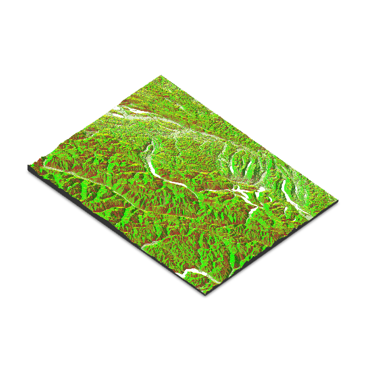

Libraries
The rayshader package makes it simple to create shaded 2D relief maps.
Since the package is on CRAN, you can
install it with
install.packages("rayshader").
We also load the raster package to
access data to work with.
Data format
The rayshader package requires input data in elevation matrix format. This special matrix has each cell containing the elevation value of the corresponding map point.
Here’s how to obtain the elevation matrix from a
raster file using the raster package.
# Define a region for the SRTM data (example: Swiss Alps)
extent_alps <- extent(7.0, 9.0, 46.0, 47.5)
# Download SRTM data
srtm_alps <- getData("SRTM", lon = 8.0, lat = 46.75)
# Crop the SRTM data to the defined extent
srtm_alps_cropped <- crop(srtm_alps, extent_alps)
# Convert the raster data to matrix
elevation_matrix <- raster_to_matrix(srtm_alps_cropped)Basic 3D map
To create a basic 3D map with
rayshader using the
sphere_shade() and plot_3d() functions,
follow these steps:
- Load your elevation data.
-
Generate a shaded texture using
sphere_shade(). -
Render the 3D map using
plot_3d().
When you render it, a 3D window will open where you can interact with the map.
elevation_matrix %>%
sphere_shade(texture="desert", sunangle = 45) %>%
plot_3d(elevation_matrix, zscale = 50)
render_snapshot('img/graph/411-map-3d-with-rayshader-1.png')

Change texture
rayshader includes a
specialized function to create textures:
create_texture(). This function accepts
5 colors as input and generates a texture suitable
for use in the sphere_shade() function.
texture <- create_texture("darkgreen", "green", "yellow", "brown", "white")
elevation_matrix %>%
sphere_shade(texture=texture, sunangle = 45) %>%
plot_3d(elevation_matrix, zscale = 50)
render_snapshot('img/graph/411-map-3d-with-rayshader-2.png')
Add water
To add water, you first need to
detect the water in the elevation matrix using the
detect_water() function.
After that, you can use the add_water() function to
integrate the water into the map.
elevation_matrix %>%
sphere_shade(texture="desert", sunangle = 45) %>%
add_water(detect_water(elevation_matrix)) %>%
plot_3d(elevation_matrix, zscale = 50)
render_snapshot('img/graph/411-map-3d-with-rayshader-3.png')
Change shade properties
The add_shadow() function can be used to add a shadow to
the map. The ray_shade() function creates a shadow based
on the sun angle, while the ambient_shade() function
creates a shadow based on the ambient light.
elevation_matrix %>%
sphere_shade(texture="desert", sunangle = 45) %>%
add_water(detect_water(elevation_matrix)) %>%
add_shadow(ray_shade(elevation_matrix), 0.5) %>% # this line adds a shadow
add_shadow(ambient_shade(elevation_matrix), 0) %>% # this line adds an ambient shadow
plot_3d(elevation_matrix, zscale = 50)
render_snapshot('img/graph/411-map-3d-with-rayshader-4.png')

Going further
You might be interested in
- creating 2d maps with rayshader
- learning more about rayshader